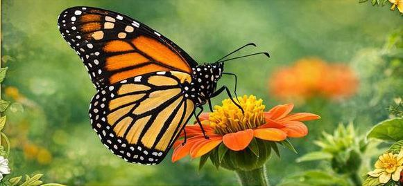

The Insecta Codex exhibit showcases the fascinating world of insects, often called "bugs".
These tiny creatures are the most diverse group of animals on Earth. Visitors can explore their habitats, behaviors,and survival strategies in a carefully designed natural environment.

Scientific Name: Insecta
Habitat: Forests,Grasslands,Deserts,Freshwater
Diet: Plants, nector,other insect
Lifespan: Varies(weeks to years)
Did you know? Insects are the largest group of animals on earth. scientist are still discovering new species every year.
Insects are small but very important creatures.Even though they are tiny and often unnoticed, they play a major role in nature and ecosystems.
Click the button below to explore more animal exhibits.